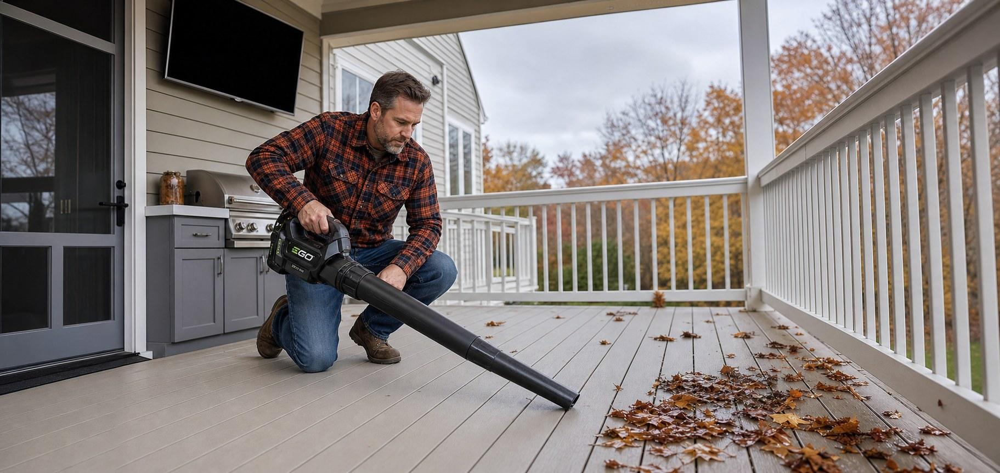
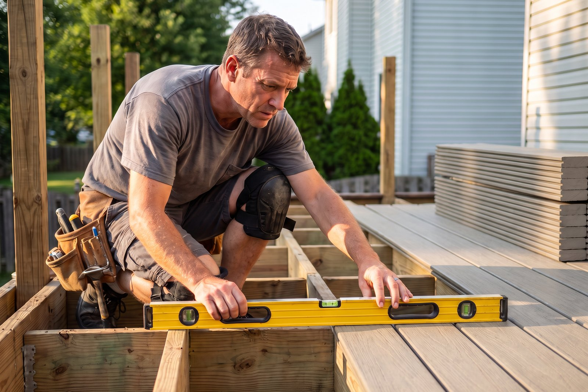
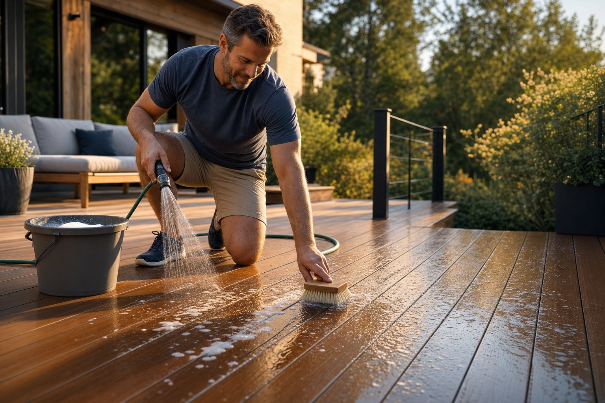
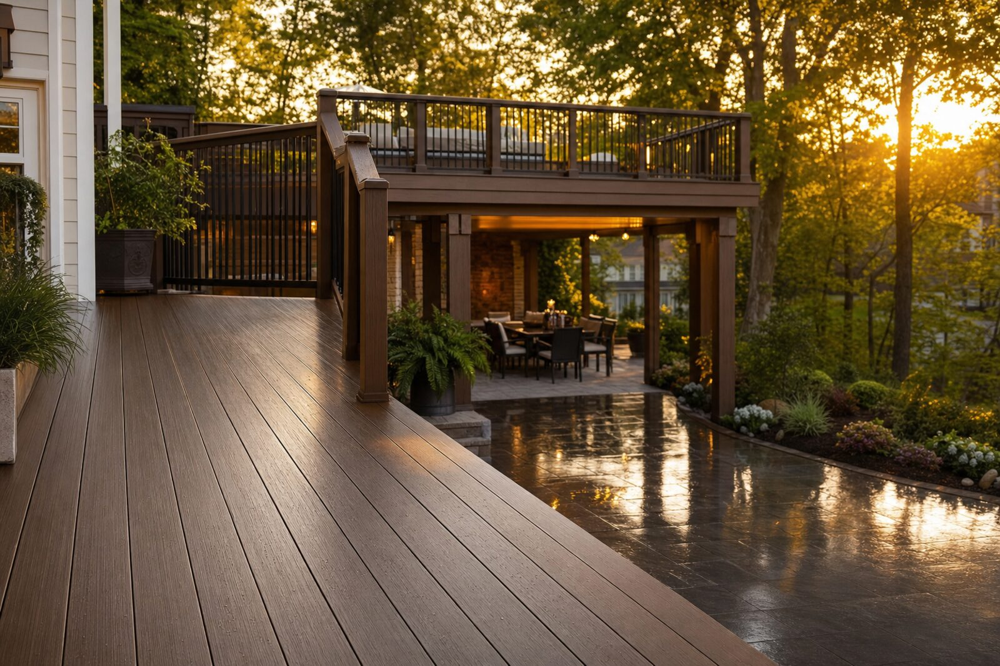
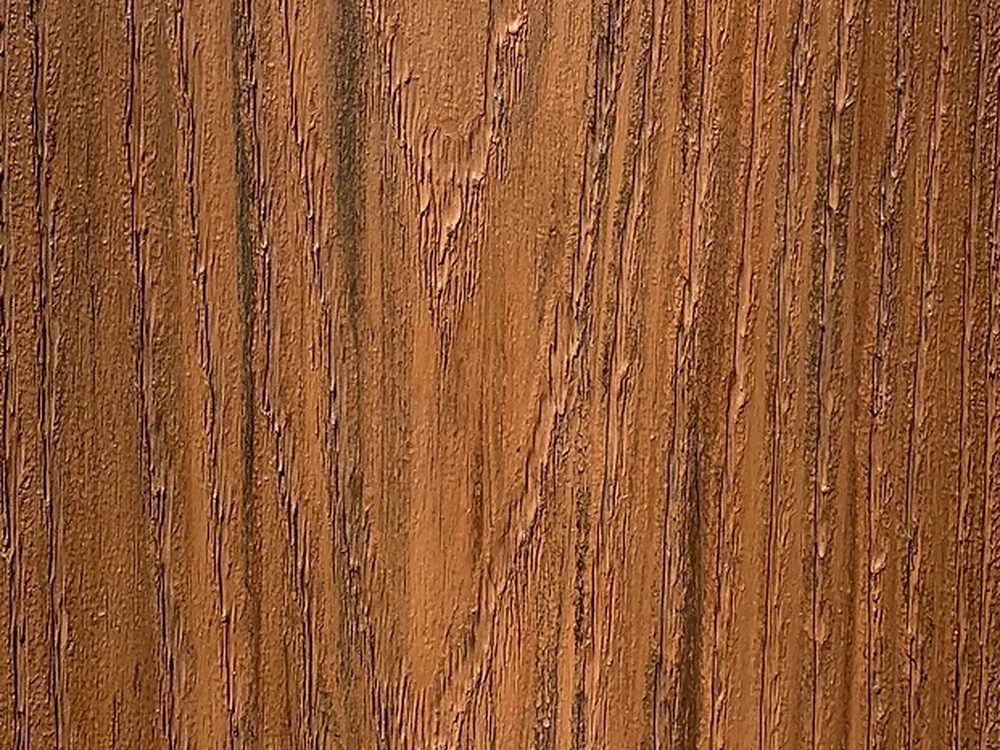

Materials
A deck seal has one job for decades with no second chance. Why automotive-grade TPE is the right material class, and how Dexerdry reinforces it further for permanent outdoor exposure.
Read article
September 14, 2026

Materials
Composite still hides wood fiber under a cap. Cellular PVC has none. A full comparison on moisture, weight, lifespan, and a straight answer on cold-climate thermal movement.
Read article
September 14, 2026

Seasonal Maintenance
Eight things to check before the cold and wet weather hits, and the one item a new or re-decked above-joist system removes for good.
Read article
September 8, 2026

Existing Decks
An above-joist seal cannot go into a deck surface that is already fastened down. Why that is, and the one path that can work on a deck you already own if the framing meets pitch and overhang spec.
Read article
August 14, 2026

Storm Season
A seven-step checklist to run before the next storm, what to inspect underneath after it passes, and why wind-driven rain does its worst damage where you never look.
Read article
August 4, 2026

Maintenance
PVC decking is low-maintenance, not zero-maintenance. The right soap-and-water routine, the stains to watch for, and why we tell homeowners to skip the power washer entirely.
Read article
July 13, 2026

Buyer's Guide
One approach catches water after it has already soaked your framing. The other stops it at the surface so the framing never gets wet. How to tell them apart, and decide, before you build.
Read article
July 7, 2026

For Builders
A pro's field workflow for the AmeriDex Dryspace System: framing for drainage, setting the Dexerdry seal as you go, fastening, and the jobsite details that keep you off the callback list.
Read article
June 29, 2026

Jersey Shore
Salt air, humidity, and Nor'easters punish shore decks and rot the framing where you cannot see it. Why coastal decks fail faster, and how an above-joist PVC system keeps one dry for life.
Read article
June 19, 2026

Design
Seven AmeriDex colors, three solid and four variegated. A practical guide to matching siding, brick, roof, and architectural style so the deck looks like it belongs.
Read article
June 5, 2026

Outdoor Living
A dry under-deck slab opens up real square footage. Five ideas, from a covered outdoor kitchen to a shaded play zone, plus what each one needs from the deck above.
Read article
May 29, 2026

How It Works
Most deck failure starts at the gaps between the boards, not at the posts. Here is the wet-dry cycle that destroys framing, and how above-joist drainage breaks it.
Read article
May 29, 2026

Planning
Decisions get expensive after the joists go up. A step-by-step checklist covering layout, framing, drainage, materials, and warranty before you build.
Read article
May 29, 2026